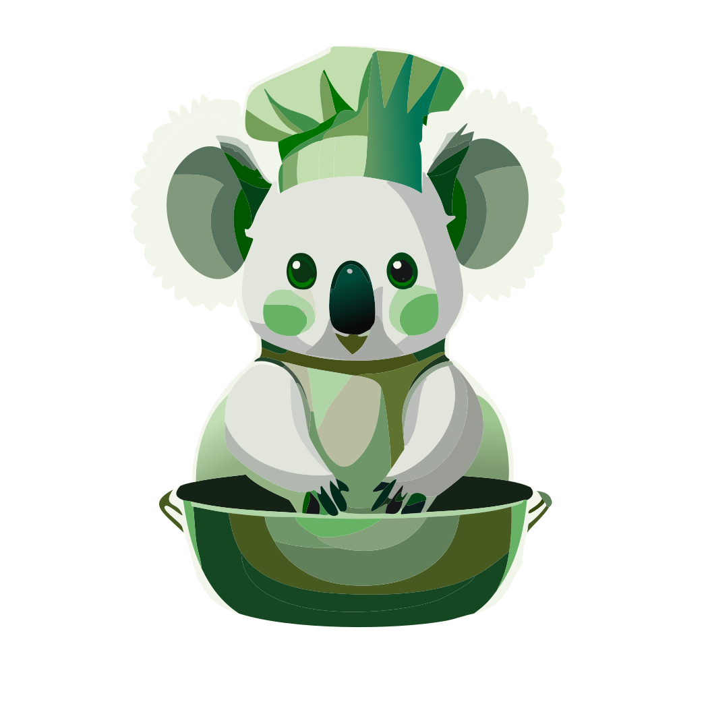

<ion-content [fullscreen]="true">
  <ion-header class="sticky">
    <ion-toolbar>
      <ion-title size="large">Rechercher une recette</ion-title>
      <ion-buttons slot="end">
        <app-profil></app-profil>
        <app-cuisinkoala></app-cuisinkoala>
      </ion-buttons>
      <ion-searchbar placeholder="Rechercher dans le profil" color="primary"></ion-searchbar>
    </ion-toolbar>
  </ion-header>
  
  <div *ngIf="result">
    <pre>{{ result | json }}</pre>
  </div>
  <ion-button (click)="testReceiptParser()">Appeler l'API</ion-button>
</ion-content>
